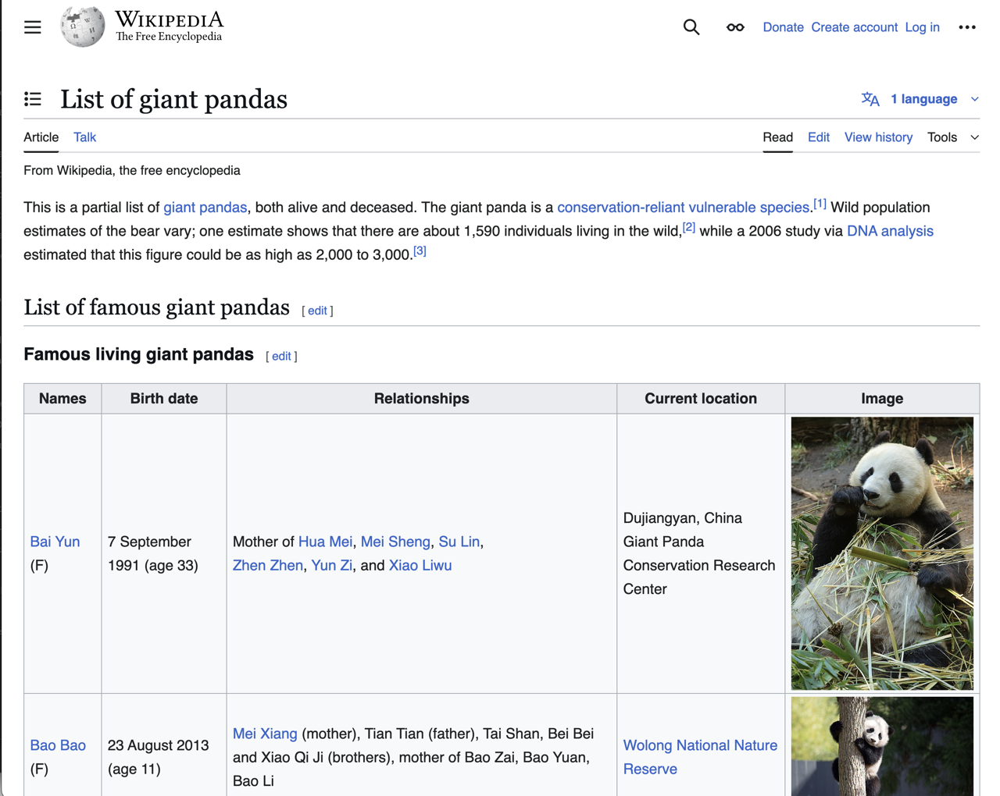
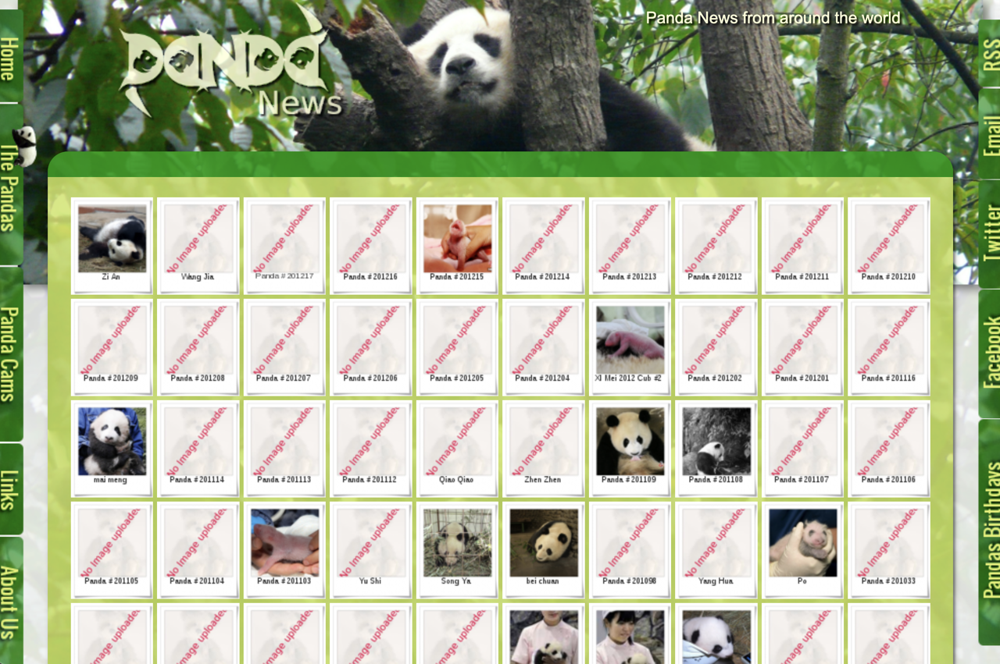
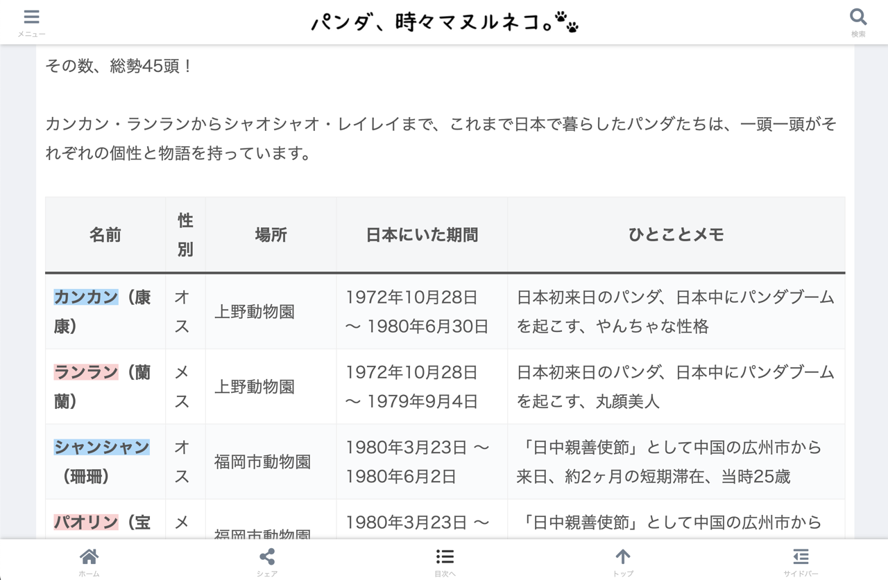
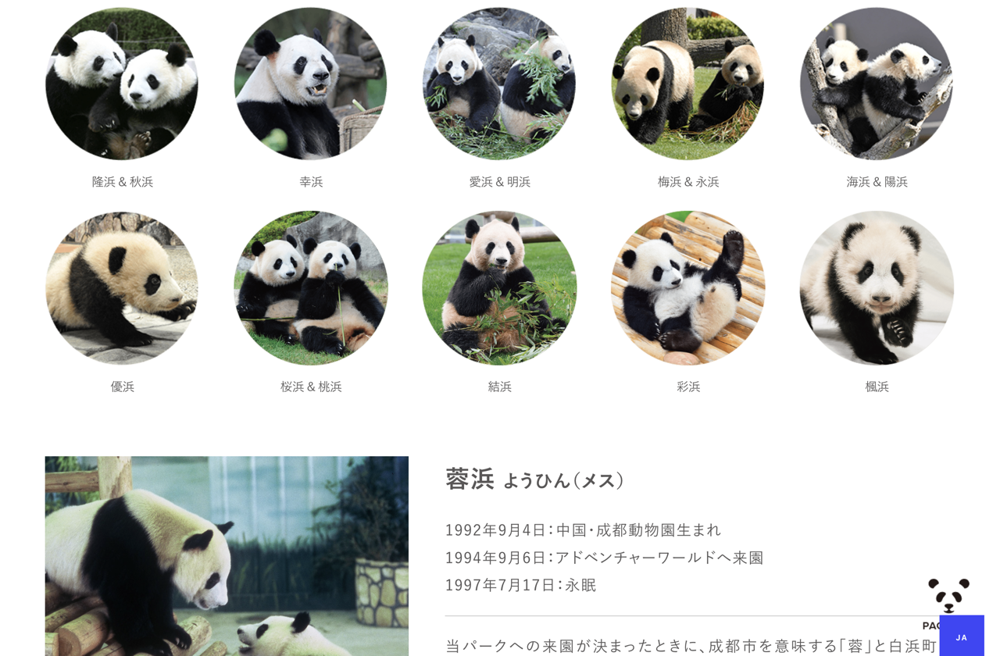
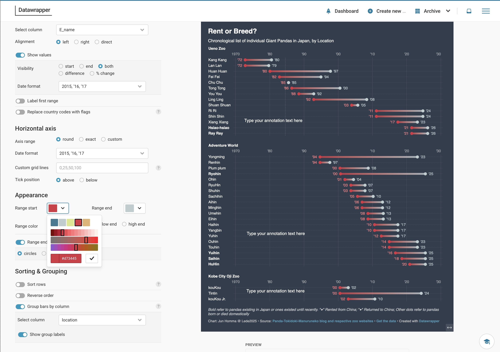
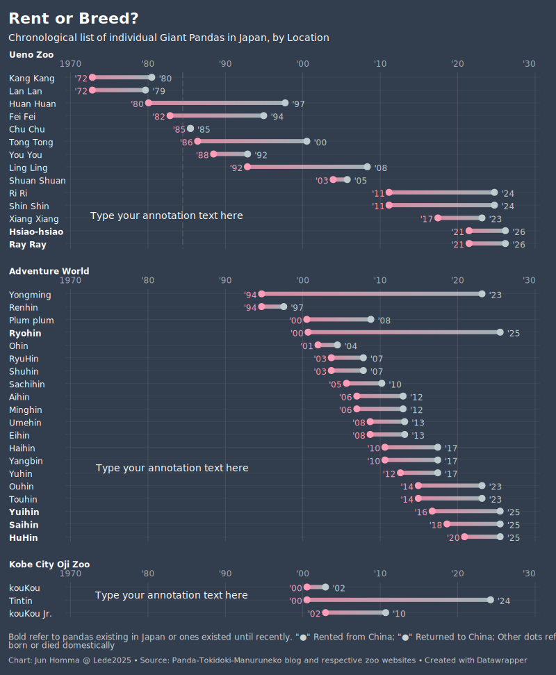
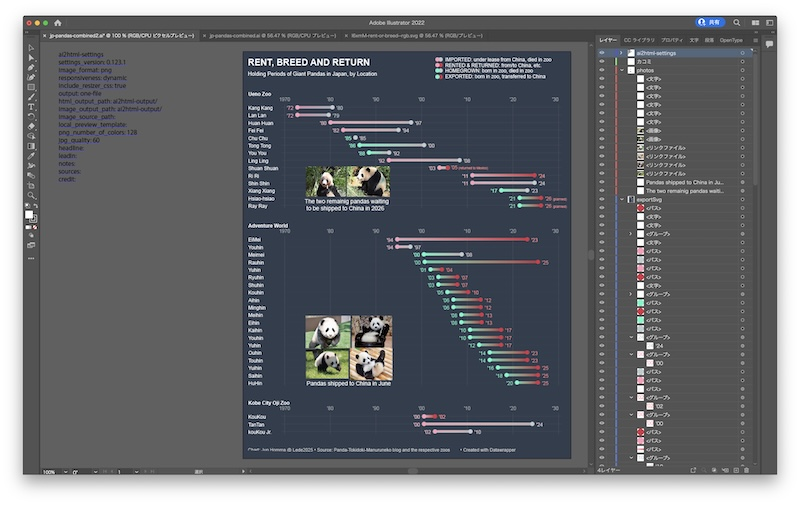
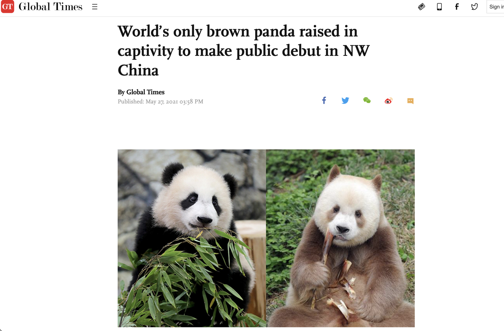

Sourcing and cleaning data are all hard




DataWrapper doesn't solve all the problems.

Manual layering with Illustrator
STEP 1
STEP 2
STEP 3
STEP 4
STEP 5
STEP 6

0
Ai2HTML does the job

Among the things I learned
